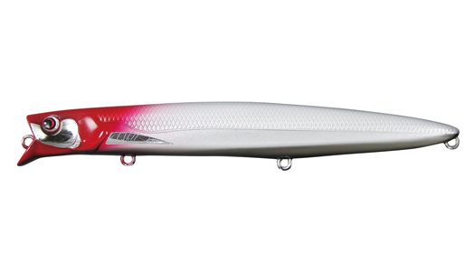
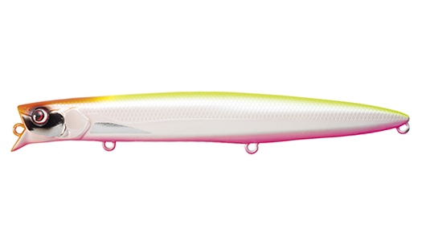
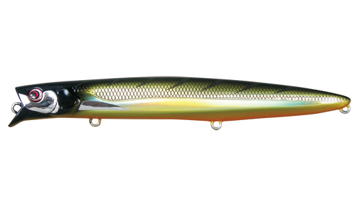
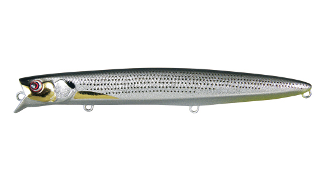

パワードラブ・ラ125SFG
（POWERD LAB-RA 125SFG）
パワードラブ・ラ125SFG（POWERD LAB-RA 125SFG）はPazdesign（パズデザイン）のハイブリッドミノーです。
「パワード」の名にふさわしい飛距離と、寄せる力を備えたハイブリッドミノーです。公式いわく「ラブ・ラ125FGの代わりではなく、ある種相反する性能を持ったミノー」。力強いウォブンロールと断続的に入るイレギュラーアクションで、デイ・ナイトを問わずサーチベイトとして使え、特に流れの強い場所で無類の強さを発揮するのが最大の魅力です。

画像出典:パズデザイン公式HP
スペック
- メーカー
- Pazdesign（パズデザイン）
- タイプ
- ハイブリッドミノー（スローフローティング）
- 全長
- 125mm
- 自重
- 16.9g
- レンジ
- 50〜100cm
- アクション
- パワーウォブンロール
- フック
- がまかつ SP MH #5
- リング
- #3
- カラー
- ノーマルカラー・ベイトフラッシュカラー（2026年の新色あり）
- ターゲット
- シーバス
- 価格
- ノーマル 2,420円／ベイトフラッシュ 2,530円（税込）
▼今すぐチェック
パワードラブ・ラ125SFGの特徴
寄せる波動とイレギュラーアクション、矢のような飛距離で流れを攻めるミノー
-
力強いウォブンロールが生む寄せの力
アクションの特徴は、力強いウォブンロールが生み出す寄せの力と、断続的に入り続けるイレギュラーアクション。デイゲーム・ナイトゲームを問わず、サーチベイトとして使える。
-
流れの強い場所で無類の強さ
海・川を問わず、特に流れの強い場所での釣りで無類の強さを発揮する。「流して良し、巻いて良し」で、数々の激流モンスターを仕留めてきたミノーだ。
-
3点固定ウェイト＋タングステンの移動重心で矢のように飛ぶ
凹凸の少ない程良い太さの筒型ボディと、フロント・センター・リアの3点に配置した固定ウェイトで、飛行姿勢が抜群に安定。さらに2個のタングステンボールの移動重心システムで、矢のように飛んでいく。
パワードラブ・ラ125SFGの使い方
基本はただ巻き。50〜100cmのレンジを、力強いウォブンロールで引いてくる。ただ巻きの中に断続的にイレギュラーアクションが入るので、巻くだけで食わせの間を作れる。
流れのある場所では、流れに対してクロスやアップクロスに投げてドリフトさせる「流す」使い方も得意。流れの変化を感じながら、流して・巻いて、魚の付き場を通していきましょう。
パワードラブ・ラ125SFGの得意な状況
河川や河口、潮の速い水道など、流れの強い場所でシーバスを狙う状況が最大の出番。
飛距離が出るので、沖の流れのヨレや明暗まで届かせたい場面や、最初に投げて魚の居場所を探るサーチベイトとして選びたい1本です。
ワンポイント
パワードラブ・ラ125SFGは「ラブ・ラ125FGの代わりではない」と公式で説明されています。ナチュラルに食わせたい時はラブ・ラ、寄せて探りたい時や流れが強い時はパワードラブ・ラ、と使い分けるのがオススメです。
2026年には、セクシーパールオレンジベリーや一撃SAKURAなどの新色も追加されています。
オススメカラー
パワードラブ・ラ125SFGは、ノーマルカラーとベイトフラッシュカラーを展開。シーバス狙いでオススメのカラーを紹介します。

#002 パワーRHパールパールボディにレッドヘッドの定番色。夜や濁りでもシルエットを見せやすい。

#010 インパクトチャートパールチャートにオレンジヘッドとピンクベリー。強い濁りやローライトに。

#006 ゴールデンギーゴゴールド系のギーゴカラー。濁りの入った河川の定番。

#03 ベイトフラッシュセレブコノシロフラッシングの強いベイトフラッシュ仕様のコノシロ。秋のコノシロパターンに。
画像出典:パズデザイン公式HP
パワードラブ・ラ125SFGに似ているルアー
-
 カゲロウ124F
メガバス
詳細はこちら＞
カゲロウ124F
メガバス
詳細はこちら＞
名作シャローランナー。より浅いレンジを引きたい時の持ち替え先に。
-
 ナバロン150F
アイマ
詳細はこちら＞
ナバロン150F
アイマ
詳細はこちら＞
強い流れでもしっかり泳ぐ万能ミノー。より大きなシルエットで流れを攻めたい時に。
-
 タイドミノーゴースト150F
DUO
詳細はこちら＞
タイドミノーゴースト150F
DUO
詳細はこちら＞
重心移動で飛ぶ150mmミノー。大場所で大型を狙いたい時に。